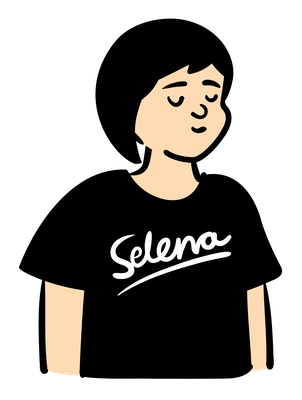

このサイトはastromimiyのポートフォリオサイトです。
Githubやブログ、各種SNSへのリンクを紹介しています。
astromimiy.com

ABOUT
astromimiy.com
astromimiyは、星とITが好きなminoriが
PROFILE
minori

星と旅行とゲームが好きな20代。紅茶も好き。
星空が大好きで毎年友人と星空撮影会を行ってる。
最近、Fortniteというゲームにハマり、e sportsも見るように
現在、某SaaS企業で元気に勤務中。
FAVORITE
LINK


お問い合わせはこちらから